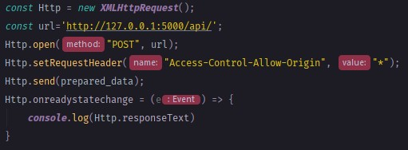
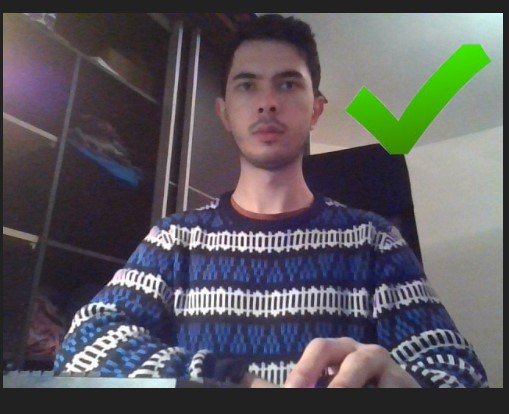

Wprowadzenie
Aby korzystać z udostępnionego pod tym adresem API, najpierw trzeba przygotować swoją aplikację do wysyłania i odbierania danych do i od aktualnej domeny.Po prawej stronie został przedstawiony przykład kodu w Javascripcie, który przesyła zakodowany do ciągu znaków base64, obrazek na ktorym ma zostać przeprowadzona predykcja, oraz odbieranie informacji zwrotnej w postaci JSON'a.

Jakie dane wysłać?
To co otrzymuje użytkownik udostępnionego tutaj API, to tylko wynikowa skomplikowanego algorytmu który stara się dokonać, jak najlepszej predykcji.Jednak nawet on nie jest nieomylny, tak jak zwykły człowiek nie da rady nieomylnie ocenić wieku osoby z każdej perspektywy i profilu.Aby jednak zmaksymalizować wynik powodzenia rozpoznania twarzy, na zdjęciu i dokonania trafnej predykcji zalecane jest aby zdjęcia wykonywane z aplikacji która będzie potrzebować takowej predykcji byly wykonywane jak najbardziej frontalnie przy jak najlepszym jednolitym oświetleniu.

Do czego używać?
Przykład użycia aplikacji jest wg. uznania użytkownika. Głównym celem tego API jest kontrola użtykowników rejestrujących się do portali społecznościowych, tak aby nieodpowiednie osoby nie mogły się podszywać pod inne, lub aby zbyt młodzi użytkownicy nie mogli korzystać ze stron dla dorosłych.Jednak to API może zostać także do czegokolwiek innego. To do czego, zostanie użyte zależy tylko od osób korzystających z niego.
